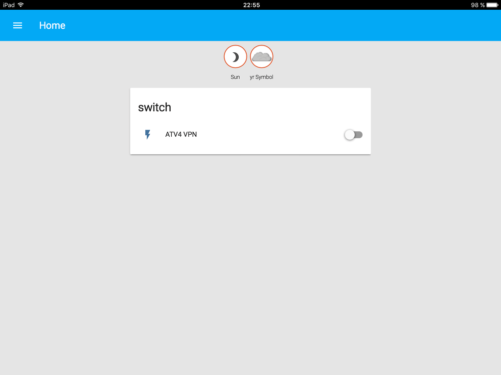
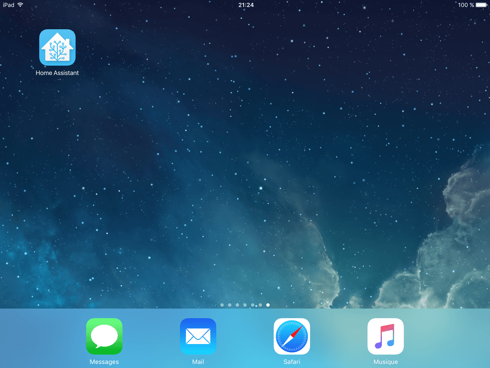

Home Assistant on Turris Omnia via LXC container
In a previous post, I described how to install OpenVPN client on a Turris Omnia router. To start or stop the client, I was using the command line and mentioned the LuCi Web User Interface.
Both ways are not super easy and fast to access. A while ago, I wrote a small Flask web application to change some settings in my router. The application just allowed to click on a button to run a script via ssh on the router.
So I could write a small webapp to do just that. But I recently read about Home Assistant. It's an open-source home automation platform to track and control your devices at home. There are many components available, including Command Line Switch which looks exactly like what I need.
The Raspberry Pi is a popular device to install Home Assistant. But my Turris Omnia is quite powerful for a router with 1 GB of RAM and 8 GB of flash. It's time to use some of that power.
From what I read, there is an openWrt package of Home Assistant. I couldn't find it in the Turris Omnia available packages. Anyway, there is another feature I wanted to try: LXC Containers. Home Assistant is a Python application, so it's easy to install in a linux container and would allow to easily keep the version up-to-date.
So let's start!
Create a LXC container
As described here, you can create a LXC container via the LuCI web interface or via the command line:
root@turris:~# lxc-create -t download -n homeassistant
Setting up the GPG keyring
Downloading the image index
WARNING: Failed to download the file over HTTPs.
The file was instead download over HTTP. A server replay attack may be possible!
---
DIST RELEASE ARCH VARIANT BUILD
---
Turris_OS stable armv7l default 2017-01-22
Turris_OS stable ppc default 2017-01-22
Alpine 3.4 armv7l default 2017-01-22
Debian Jessie armv7l default 2017-01-22
Gentoo stable armv7l default 2017-01-22
openSUSE 13.2 armv7l default 2017-01-22
openSUSE 42.2 armv7l default 2017-01-22
openSUSE Tumbleweed armv7l default 2017-01-22
Ubuntu Xenial armv7l default 2017-01-22
Ubuntu Yakkety armv7l default 2017-01-22
---
Distribution: Debian
Release: Jessie
Architecture: armv7l
Flushing the cache...
Downloading the image index
Downloading the rootfs
Downloading the metadata
The image cache is now ready
Unpacking the rootfs
---
Distribution Debian version Jessie was just installed into your
container.
Content of the tarballs is provided by third party, thus there is
no warranty of any kind.
As you can see above, I chose a Debian Jessie distribution.
Let's start and enter the container:
root@turris:~# lxc-start -n homeassistant root@turris:~# lxc-attach -n homeassistant
Now that we are inside the container, we can first set the root password:
root@LXC_NAME:~# passwd Enter new UNIX password: Retype new UNIX password: passwd: password updated successfully
LXC_NAME is not a super nice hostname. Let's update it:
root@LXC_NAME:~# hostnamectl set-hostname homeassistant Failed to create bus connection: No such file or directory
Ok... We have to install dbus. While we are at it, let's install vim because we'll need it to edit the homeassistant configuration:
root@LXC_NAME:~# apt-get update root@LXC_NAME:~# apt-get upgrade root@LXC_NAME:~# apt-get install -y dbus vim
Setting the hostname now works properly:
root@LXC_NAME:~# hostnamectl set-hostname homeassistant
We can exit and enter the container again to see the change:
root@LXC_NAME:~# exit root@turris:~# lxc-attach -n homeassistant root@homeassistant:~#
Install Home Assistant
Next, we just have to follow the Home Assistant installation instructions. They are well detailed. I'll just quickly repeat them here to make it easier to follow but you should refer to the official page for any update:
root@homeassistant:~# apt-get install python-pip python3-dev root@homeassistant:~# pip install --upgrade virtualenv root@homeassistant:~# adduser --system homeassistant root@homeassistant:~# mkdir /srv/homeassistant root@homeassistant:~# chown homeassistant /srv/homeassistant root@homeassistant:~# su -s /bin/bash homeassistant homeassistant@homeassistant:/root$ virtualenv -p python3 /srv/homeassistant homeassistant@homeassistant:/root$ source /srv/homeassistant/bin/activate (homeassistant) homeassistant@homeassistant:/root$ pip3 install --upgrade homeassistant
Just run hass to start the application and create the default configuration:
(homeassistant) homeassistant@homeassistant:/root$ hass
Press CTRL-C to exit. Check the created configuration file: /home/homeassistant/.homeassistant/configuration.yaml.
You can comment out the introduction: line:
# Show links to resources in log and frontend #introduction:
Add a switch to Home Assistant
To start and stop our VPN we define a Command Line Switch that triggers the openvpn script on the router. Add the following at the end of the file:
switch:
platform: command_line
switches:
atv_vpn:
command_on: 'ssh root@<router IP> "/etc/init.d/openvpn start"'
command_off: 'ssh root@<router IP> "/etc/init.d/openvpn stop"'
friendly_name: ATV4 VPN
The LXC container is just like another computer (a virtual one) on the local network. To access the router, we have to ssh to it. For this to work without requesting a password, we have to generate a ssh key and add the public key to the authorized_keys file on the router:
homeassistant@homeassistant:~$ ssh-keygen Generating public/private rsa key pair. Enter file in which to save the key (/home/homeassistant/.ssh/id_rsa): Enter passphrase (empty for no passphrase): Enter same passphrase again: Your identification has been saved in /home/homeassistant/.ssh/id_rsa. Your public key has been saved in /home/homeassistant/.ssh/id_rsa.pub.
Copy the content of /home/homeassistant/.ssh/id_rsa.pub to /root/.ssh/authorized_keys (on the router not inside the container).
With this configuration, the switch will always be off when you restart Home Assistant. It won't know either if you change the state using the command line or LuCI web interface. This can be solved by adding the optional command_state line. The command shall return a result code 0 if the switch is on. The openvpn init script on the Turris Omnia doesn't take "status" as argument. An easy way to check if openvpn is running is to use pgrep. Our new configuration becomes:
switch:
platform: command_line
switches:
atv_vpn:
command_on: 'ssh root@<router IP> "/etc/init.d/openvpn start"'
command_off: 'ssh root@<router IP> "/etc/init.d/openvpn stop"'
command_state: 'ssh root@<router IP> "pgrep /usr/sbin/openvpn"'
friendly_name: ATV4 VPN
That's it. The switch state will now properly be updated even if the VPN is started or stopped without using the application.
If you go to http://<container IP>:8123, you should see something like that:
Automatically start Home Assistant
Let's configure systemd to automatically start the application. Create the file /etc/systemd/system/home-assistant@homeassistant.service:
root@homeassistant:~# cat <<EOF >> /etc/systemd/system/home-assistant@homeassistant.service [Unit] Description=Home Assistant After=network.target [Service] Type=simple User=homeassistant ExecStart=/srv/homeassistant/bin/hass -c "/home/homeassistant/.homeassistant" [Install] WantedBy=multi-user.target EOF
Enable and launch Home Assistant:
root@homeassistant:~# systemctl --system daemon-reload root@homeassistant:~# systemctl enable home-assistant@homeassistant Created symlink from /etc/systemd/system/multi-user.target.wants/home-assistant@homeassistant.service to /etc/systemd/system/home-assistant@homeassistant.service. root@homeassistant:~# systemctl start home-assistant@homeassistant
You can check the logs with:
root@homeassistant:~# journalctl -f -u home-assistant@homeassistant
We just have to make sure the container starts automatically when we reboot the router. Set the following in /etc/config/lxc-auto:
root@turris:~# cat /etc/config/lxc-auto config container option name homeassistant option timeout 60
Make it easy to access Home Assistant
There is one more thing we want to do: assign a fixed IP to the container. This can be done like for any machines on the LAN via the DHCP and DNS settings in LuCI interface. In Static Leases, assign a fixed IP to the container MAC address.
Now that the container has a fixed IP, go to http://<container IP>:8123 and create a bookmark or add an icon to your phone and tablet home screen. This makes it easy for anyone at home to turn the VPN on and off!
